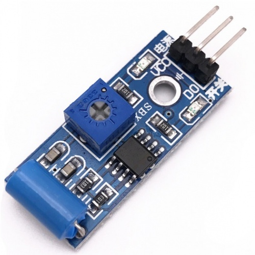
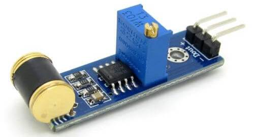
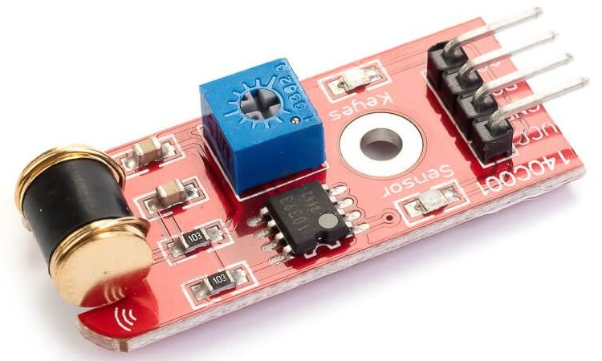
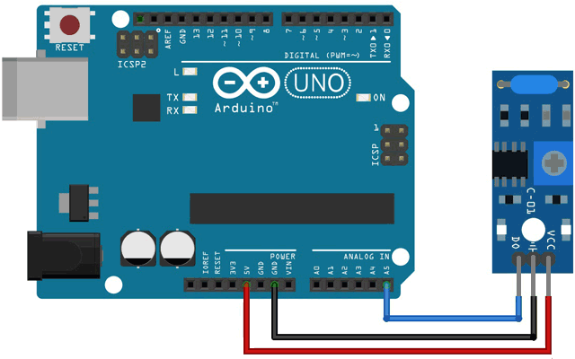

Датчик вибрации и Arduino
Датчик вибрации Arduino используется для определения наличия внешних вибрационных воздействий на модуль. Датчики вибрации выпускаются в виде различных модулей, например, SW-420, Logo Sensor v1.5, 140C001 801S.
 |
 |
 |
| а) | б) | в) |
а) SW-420, б) Logo Sensor v1.5; в) 140C001 801S
Благодаря простому способу подключения, датчики вибрации применяются для реализации самых разнообразных проектов:
- Системы охраны.
- Сигнализации.
- Электронные замки.
- Детекторы движения.
- Противоугонные системы.
- Сейсмостанции.
- Детские игрушки.
- Бытовые приборы.
- Спортивный инвентарь.
Наиболее актуальным является применение датчиков вибрации в сфере охранной сигнализации различного назначения. За счет высокого уровня чувствительности такие устройства могут реагировать на вибрации широкого диапазона интенсивности, улавливая колебания во всех плоскостях.
Принцип работы датчика вибрации
Основа датчика SW-420 – металлическая пружина внутри пластиковой трубки, которая начинает колебаться при вибрации. Модуль датчика вибрации SW-420 может работать с напряжением от 3,3 В до 5 В. В составе этого модуля присутствует компаратор LM393, который позволяет обнаруживать вибрации выше определенной границы и, таким образом, обеспечивать на цифровом выходе модуля датчика сигнал логической 1 или логического 0. При отсутствии вибраций (нормальный режим функционирования) на выходе датчика присутствует сигнал логического 0, а при обнаружении вибраций на выходе датчика формируется сигнал логической 1. В составе модуля датчика есть и светодиоды: один для индикации подаваемого питания на модуль, а другой – для индикации состояния выхода. Также присутствует потенциометр, с помощью которого можно регулировать границу срабатывания, то есть устанавливать чувствительность датчика.
Внутри сенсора 801S находится металлический шарик на пружинке, который реагирует на малейшие колебания. Принцип работы данных датчиков можно сравнить с тактовой кнопкой — если контакты на кнопке замыкаются, когда мы на нее нажимаем, то контакты в рассматриваемом нами датчике замыкаются при возникновении вибрации. Рассмотрим далее, как подключить датчик вибрации к плате Arduino UNO.
Logo Sensors v1.5 имеет три выхода — GND и VCC для питания и вывод аналогового сигнала A0, который подключается к любому аналоговому входу. Модуль вибрации 140C001 801S имеет дополнительно цифровой порт, при достижении определенной величины вибрации (устанавливается подстроечным резистором) на порт выдается логический ноль — поэтому его можно использовать автономно, без контроллера.
Подключение датчика вибрации к Arduino
